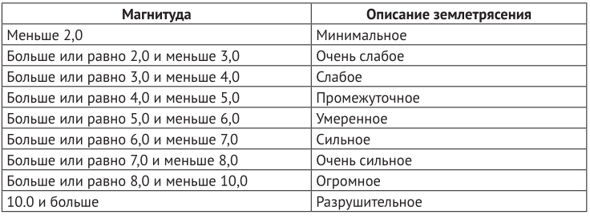

17. Шкала Рихтера. (в коде есть строки из следующих тем: "словари, циклы, модули").
Условие:
Диапазоны магнитуд землетрясений по шкале Рихтера с описаниями:

Ваша программа должна запрашивать у пользователя магнитуду землетрясения по шкале Рихтера и выводить на экран описание уровня, соответствующего введенному значению.
Например, если пользователь введет значение 5,5, нужно вывести сообщение о том, что этой магнитуде соответствует умеренный уровень землетрясения.
Код:
from math import inf
# ввод данных
richter_scale = {
"Минимальное": (0.0, 2.0),
"Очень слабое": (2.0, 3.0),
"Слабое": (3.0, 4.0),
"Промежуточное": (4.0, 5.0),
"Умеренное": (5.0, 6.0),
"Сильное": (6.0, 7.0),
"Очень сильное": (7.0, 8.0),
"Огромное": (8.0, 10.0),
"Разрушительное": (10.0, inf)
}
value = float(input("%50s" % "Введите магнитуду землетрясения: "))
for a, b in richter_scale.items():
if b[0] <= value < b[-1]:
print("%49s" % "Землетрясение:", a)